NVIDIA Warp Documentation#
Warp is a Python framework for GPU-accelerated simulation, robotics, and machine learning. Warp takes regular Python functions and JIT compiles them to efficient kernel code that can run on the CPU or GPU.
Warp comes with a rich set of primitives for physics simulation, robotics, geometry processing, and more. Warp kernels are differentiable and can be used as part of machine-learning pipelines with frameworks such as PyTorch, JAX and Paddle.

Quickstart#
Install Warp from PyPI:
$ pip install warp-lang
For conda, nightly builds, CUDA 13 builds, building from source, and driver requirements, see Installation.
Example Gallery#
The warp/examples directory
contains examples covering physics simulation, geometry processing, optimization, and
tile-based GPU programming. Install the optional dependencies with
pip install warp-lang[examples] and run them from the command line:
python -m warp.examples.<example_subdir>.<example>
warp/examples/core#

|
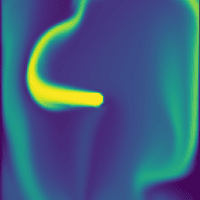 |

|
|
dem |
fluid |
graph capture |
marching cubes |
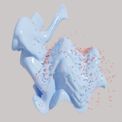 |

|

|
|
mesh |
nvdb |
raycast |
raymarch |
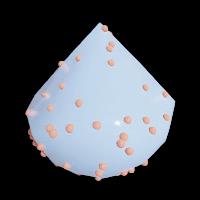 |

|

|
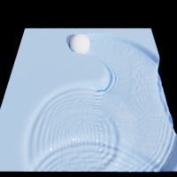 |
sample_mesh |
sph |
torch |
wave |
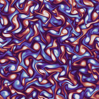 |
|||
2-D incompressible turbulence in a periodic box |
warp/examples/fem#

|

|

|
|
diffusion 3d |
mixed elasticity |
apic fluid |
streamlines |
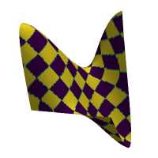 |
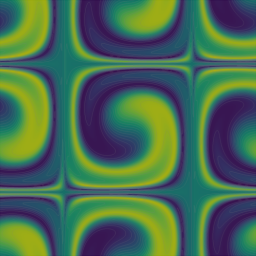 |
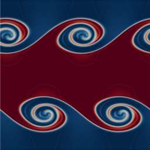 |
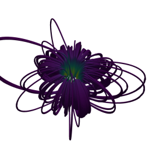 |
distortion energy |
taylor green |
kelvin helmholtz |
magnetostatics |
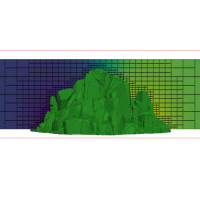 |
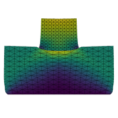 |
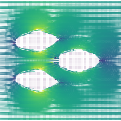 |
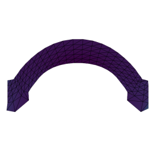 |
adaptive grid |
nonconforming contact |
darcy level-set optimization |
elastic shape optimization |
warp/examples/optim#

|
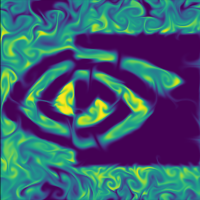 |
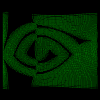 |
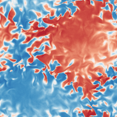 |
diffray |
fluid checkpoint |
particle repulsion |
navier-stokes perturbation |
warp/examples/tile#
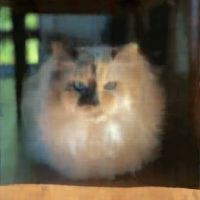 |
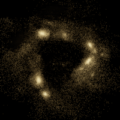 |
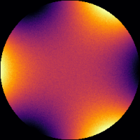 |
|
mlp |
nbody |
mcgp |
User Guide
Language Reference
API Reference
Domain Modules